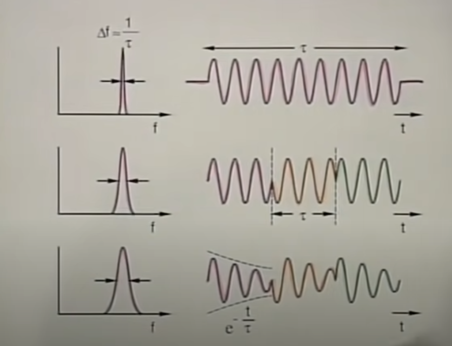
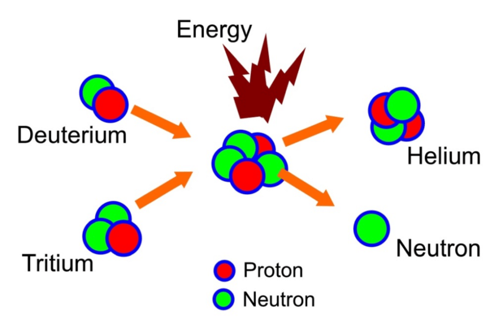
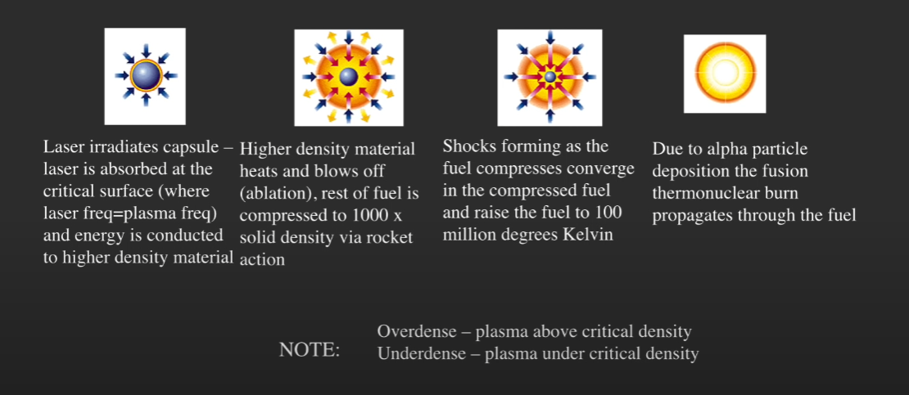

LASERs 101
These notes are based off of a series called "Laser Fundamentals" produced by Dr. Shaoul Ezekiel and published by MIT OpenCourseWare
- Laser Fundamentals I
- Laser Fundamentals II
- Laser Fundamentals III
- Laser Fundamentals III - Continued
Other Material used
Part I
Why are LASERs cool?
- Fantastic Applications
- bar code readers
- compact disks
- LASER "shows"
- color copiers
- sensors
- military systems
- non-destructive testing
- fiberoptic communication << focus of most applications
- medical procedures
LASER Properies
- Visible Range - Able to pick from a wide series of bands
- Tight Spectrum Width - Precise control of the wavelength of the LASER

- High Temperal Coherenece
- Effectivley, the transmission of the beam continously is much larger than over conditional sources.
- The smaller the width, \(\Delta{}f\) the longer the \(\tau{}\)
- Lets us predict the amplitude and phase at any posistion
- Useful for communication, sensors, spectroscopy, etc. 
- Intensity
- Power = Intesity / Area
- So either provide a LOT of power, or use a small area.
- Power = Intesity / Area
Pulse LASERs
Q-Switching
- Precharge the LASER before emitting. Then open the cavity to release the charge, and recieve a pulse.
- Do this fast enough and you can get what appears to be a continous beam of high powered energy.
Amplifier Chain
- A single LASER emission will go through a series of small and large rod amplifiers to add power to the beam. After a enough of these, a larger amplifier may be required, called a lense amplifier.
Fusion
TLDR. Deuterium + Tritium = Helium + Neutron 
- Since there is a mass loss. In order to sustain \(E=MC^2\), energy is produced!
- We can use this to heat water to produce steam.
- You can stop the reaction by removing the energy source.

Laser Emissions
- Atom gains charge that it will want to release
- The atom releases that charge in the form of a photon